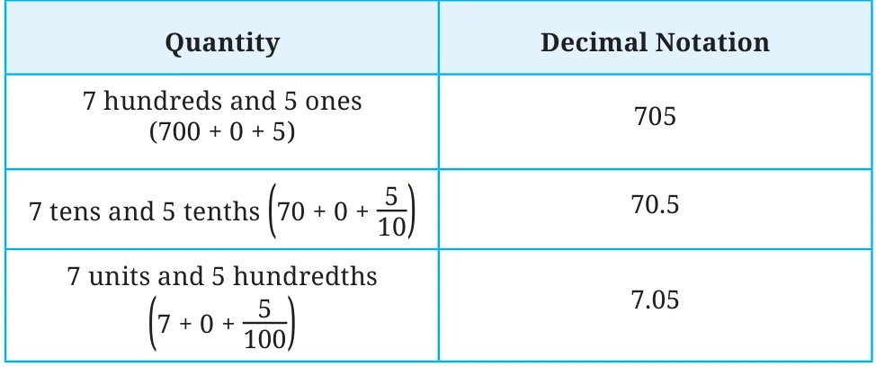
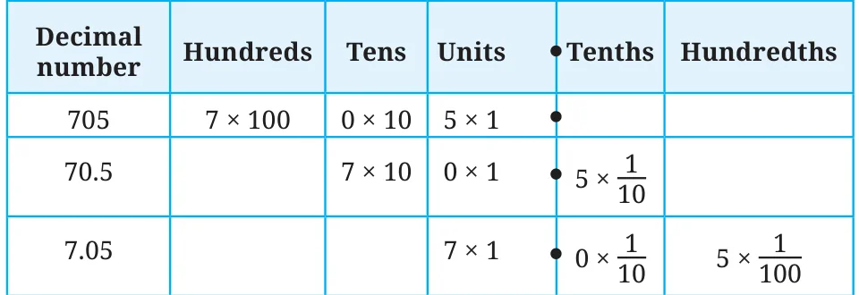
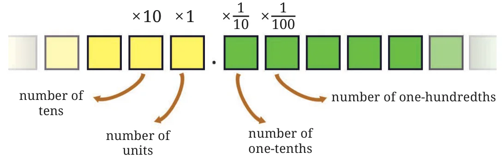
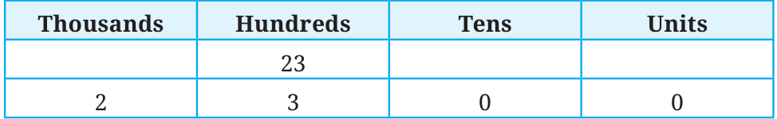
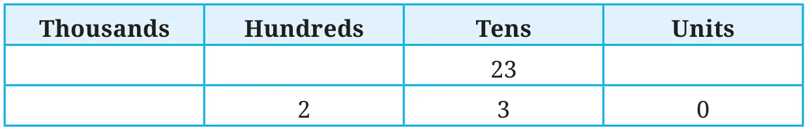
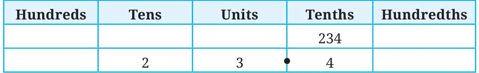

We have been writing numbers in a particular way, say 456, instead of writing them as \(4 \times 100\) (4 hundreds) \(+\ 5 \times 10\) (5 tens) \(+\ 6 \times 1\) (6 ones). Similarly, can we skip writing tenths and hundredths?
Can the quantity \(4\frac{2}{10}\) be written as 42 \(\left(\text{skipping the } \frac{1}{10} \text{ in } 2 \times \frac{1}{10}\right)\)?
If yes, how would we know if 42 means 4 tens and 2 units or it means 4 units and 2 tenths?
Similarly, 705 could mean:
- 7 hundreds, and 0 tens and 5 ones \((700 + 0 + 5)\)
- 7 tens and 0 units and 5 tenths \(\left(70 + 0 + \frac{5}{10}\right)\)
- 7 units and 0 tenths and 5 hundredths \(\left(7 + \frac{0}{10} + \frac{5}{100}\right)\)
Since these are different quantities, we need to have distinct ways of writing them.
To identify the place value where integers end and the fractional parts start, we use a point or period (‘.’) as a separator, called a decimal point.
The above quantities in decimal notation are then:

These numbers, when shown through place value, are as follows:


Thus decimal notation is a natural extension of the Indian place value system to numbers also having fractional parts. Just as 705 means \(7 \times 100 + 5 \times 1\), the number 70.5 means \(7 \times 10 + 5 \times \frac{1}{10}\), and 7.05 means \(7 \times 1 + 5 \times \frac{1}{100}\).
We have seen how to write numbers using the decimal point (‘.’). But how do we read/say these numbers?
We know that 705 is read as seven hundred and five.
70.5 is read as seventy point five, short for seventy and five-tenths.
7.05 is read as seven point zero five, short for seven and five hundredths.
0.274 is read as zero point two seven four. We don’t read it as zero point two hundred and seventy four as 0.274 means 2 one-tenths and 7 one-hundredths and 4 one-thousandths.
Make a place value table similar to the one above. Write each quantity in decimal form and in terms of place value, and read the number:
- 2 ones, 3 tenths and 5 hundredths
- 1 ten and 5 tenths
- 4 ones and 6 hundredths
- 1 hundred, 1 one and 1 hundredth
- \(\frac{8}{100}\) and \(\frac{9}{10}\)
- \(\frac{5}{100}\)
- \(\frac{1}{10}\)
- \(2\frac{1}{100}\), \(4\frac{1}{10}\) and \(7\frac{7}{1000}\)
In the chapter on large numbers, we learned how to write 23 hundreds.
23 hundreds \(= 23 \times 100 = 2000 + 300 = 2300\).

Similarly, 23 tens would be:
23 tens \(= 23 \times 10 = 200 + 30 = 230\).

How can we write 234 tenths in decimal form?
234 tenths \(= \frac{234}{10}\)
\(= \frac{200}{10} + \frac{30}{10} + \frac{4}{10}\)
\(= 20 + 3 + \frac{4}{10}\)
\(= 23.4\).

Write these quantities in decimal form: (a) 234 hundredths, (b) 105 tenths.